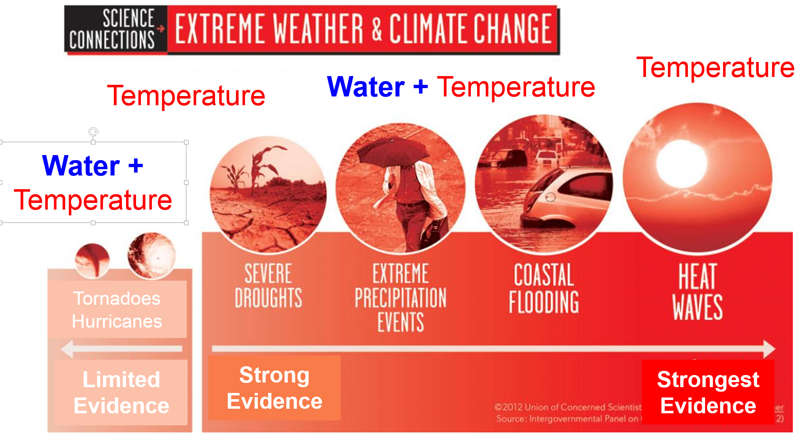
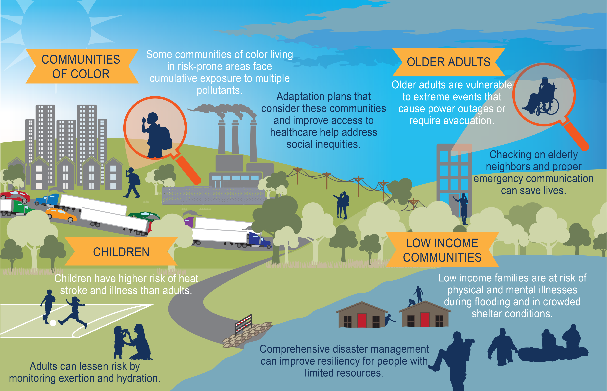
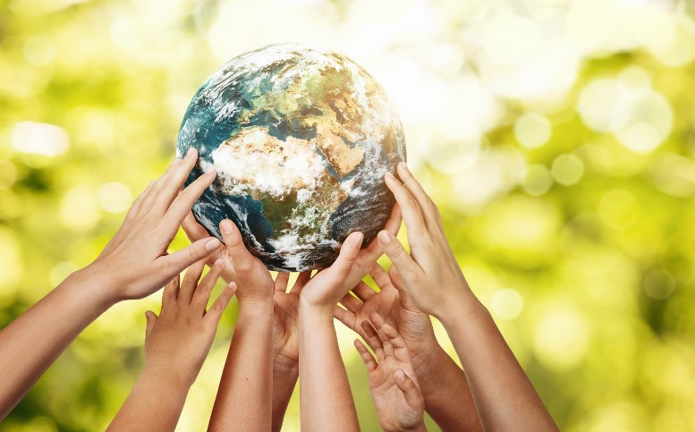

What causes global warming?
1. Global warming occurs when carbon dioxide (CO2) and other air pollutants collect in the atmosphere and absorb sunlight and solar radiation that have bounced off the earth’s surface. Normally this radiation would escape into space, but these pollutants, which can last for years to centuries in the atmosphere, trap the heat and cause the planet to get hotter. These heat-trapping pollutants—specifically carbon dioxide, methane, nitrous oxide, water vapor, and synthetic fluorinated gases—are known as greenhouse gases, and their impact is called the greenhouse effect.
2. Though natural cycles and fluctuations have caused the earth’s climate to change several times over the last 800,000 years, our current era of global warming is directly attributable to human activity—specifically to our burning of fossil fuels such as coal, oil, gasoline, and natural gas, which results in the greenhouse effect. In the United States, the largest source of greenhouse gases is transportation (29 percent), followed closely by electricity production (28 percent) and industrial activity (22 percent). Learn about the natural and human causes of climate change.
3. Curbing dangerous climate change requires very deep cuts in emissions, as well as the use of alternatives to fossil fuels worldwide. The good news is that countries around the globe have formally committed—as part of the 2015 Paris Climate Agreement—to lower their emissions by setting new standards and crafting new policies to meet or even exceed those standards. The not-so-good news is that we’re not working fast enough. To avoid the worst impacts of climate change, scientists tell us that we need to reduce global carbon emissions by as much as 40 percent by 2030. For that to happen, the global community must take immediate, concrete steps: to decarbonize electricity generation by equitably transitioning from fossil fuel–based production to renewable energy sources like wind and solar; to electrify our cars and trucks; and to maximize energy efficiency in our buildings, appliances, and industries.

How is global warming linked to extreme weather?
1. Scientists agree that the earth’s rising temperatures are fueling longer and hotter heat waves, more frequent droughts, heavier rainfall, and more powerful hurricanes. In 2015, for example, scientists concluded that a lengthy drought in California—the state’s worst water shortage in 1,200 years—had been intensified by 15 to 20 percent by global warming. They also said the odds of similar droughts happening in the future had roughly doubled over the past century. And in 2016, the National Academies of Science, Engineering, and Medicine announced that we can now confidently attribute some extreme weather events, like heat waves, droughts, and heavy precipitation, directly to climate change.
2. The earth’s ocean temperatures are getting warmer, too—which means that tropical storms can pick up more energy. In other words, global warming has the ability to turn a category 3 storm into a more dangerous category 4 storm. In fact, scientists have found that the frequency of North Atlantic hurricanes has increased since the early 1980s, as has the number of storms that reach categories 4 and 5. The 2020 Atlantic hurricane season included a record-breaking 30 tropical storms, 6 major hurricanes, and 13 hurricanes altogether. With increased intensity come increased damage and death. The United States saw an unprecedented 22 weather and climate disasters that caused at least a billion dollars’ worth of damage in 2020, but 2017 was the costliest on record and among the deadliest as well: Taken together, that year's tropical storms (including Hurricanes Harvey, Irma, and Maria) caused nearly $300 billion in damage and led to more than 3,300 fatalities.
3. The impacts of global warming are being felt everywhere. Extreme heat waves have caused tens of thousands of deaths around the world in recent years. And in an alarming sign of events to come, Antarctica has lost nearly four trillion metric tons of ice since the 1990s. The rate of loss could speed up if we keep burning fossil fuels at our current pace, some experts say, causing sea levels to rise several meters in the next 50 to 150 years and wreaking havoc on coastal communities worldwide.

What are the other effects of global warming?
1. Each year scientists learn more about the consequences of global warming, and each year we also gain new evidence of its devastating impact on people and the planet. As the heat waves, droughts, and floods associated with climate change become more frequent and more intense, communities suffer and death tolls rise. If we’re unable to reduce our emissions, scientists believe that climate change could lead to the deaths of more than 250,000 people around the globe every year and force 100 million people into poverty by 2030.
2. Global warming is already taking a toll on the United States. And if we aren’t able to get a handle on our emissions, here’s just a smattering of what we can look forward to:
- Disappearing glaciers, early snowmelt, and severe droughts will cause more dramatic water shortages and continue to increase the risk of wildfires in the American West.
- Rising sea levels will lead to even more coastal flooding on the Eastern Seaboard, especially in Florida, and in other areas such as the Gulf of Mexico.
- Forests, farms, and cities will face troublesome new pests, heat waves, heavy downpours, and increased flooding. All of these can damage or destroy agriculture and fisheries.
- Disruption of habitats such as coral reefs and alpine meadows could drive many plant and animal species to extinction.
- Allergies, asthma, and infectious disease outbreaks will become more common due to increased growth of pollen-producing ragweed, higher levels of air pollution, and the spread of conditions favorable to pathogens and mosquitoes.
3. Though everyone is affected by climate change, not everyone is affected equally. Indigenous people, people of color, and the economically marginalized are typically hit the hardest. Inequities built into our housing, health care, and labor systems make these communities more vulnerable to the worst impacts of climate change—even though these same communities have done the least to contribute to it.

Is global warming too big a problem for me to help tackle?
1. No! While we can’t win the fight without large-scale government action at the national level, we also can’t do it without the help of individuals who are willing to use their voices, hold government and industry leaders to account, and make changes in their daily habits.
2. Wondering how you can be a part of the fight against global warming? Reduce your own carbon footprint by taking a few easy steps: Make conserving energy a part of your daily routine and your decisions as a consumer. When you shop for new appliances like refrigerators, washers, and dryers, look for products with the government’s ENERGY STAR® label; they meet a higher standard for energy efficiency than the minimum federal requirements. When you buy a car, look for one with the highest gas mileage and lowest emissions. You can also reduce your emissions by taking public transportation or carpooling when possible.
3. And while new federal and state standards are a step in the right direction, much more needs to be done. Voice your support of climate-friendly and climate change preparedness policies, and tell your representatives that equitably transitioning from dirty fossil fuels to clean power should be a top priority—because it’s vital to building healthy, more secure communities.
4. You don’t have to go it alone, either. Movements across the country are showing how climate action can build community, be led by those on the front lines of its impacts, and create a future that’s equitable and just for all.